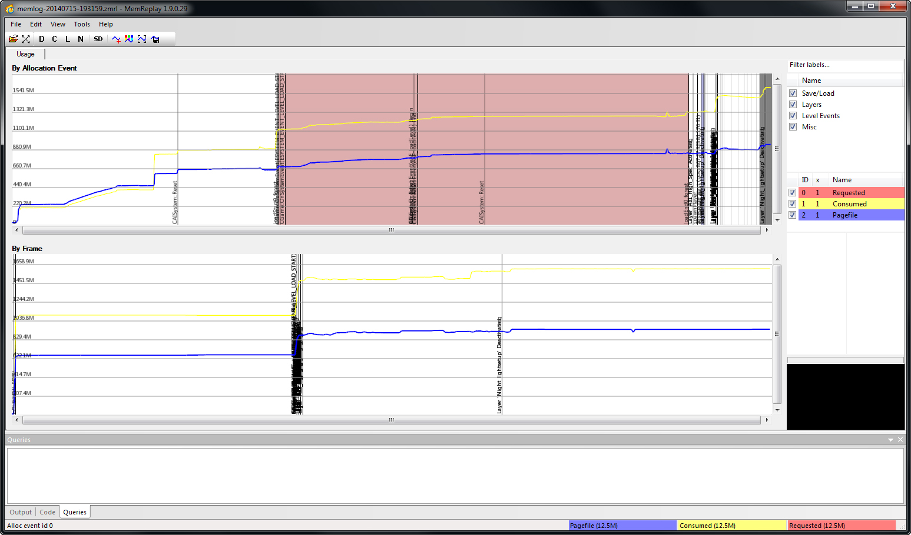
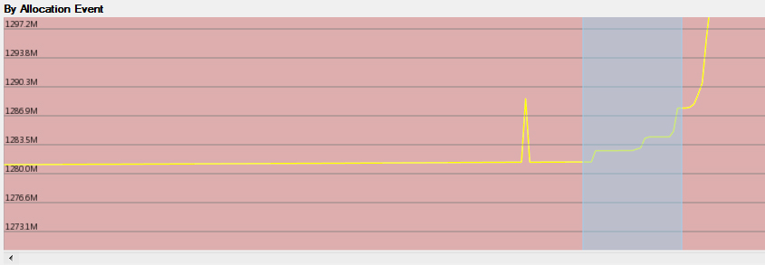
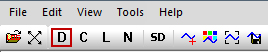
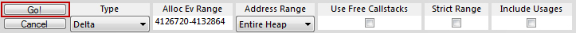
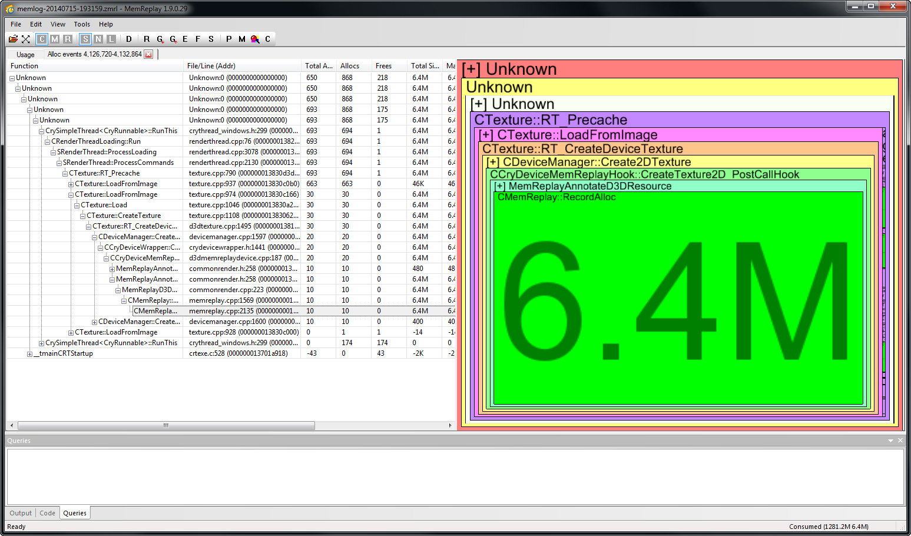
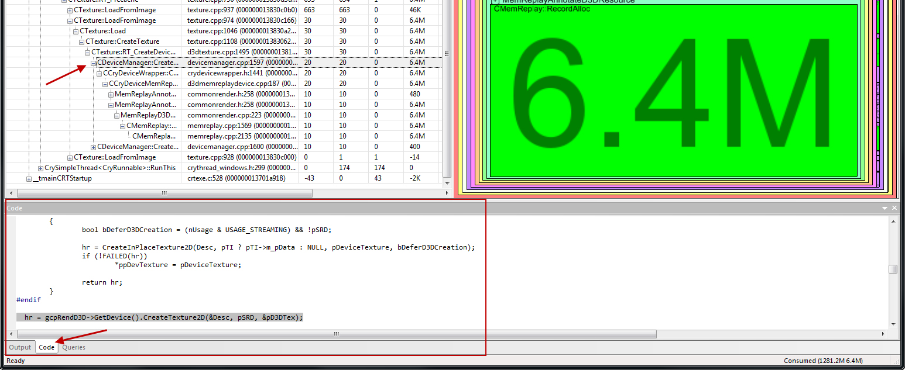
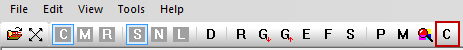
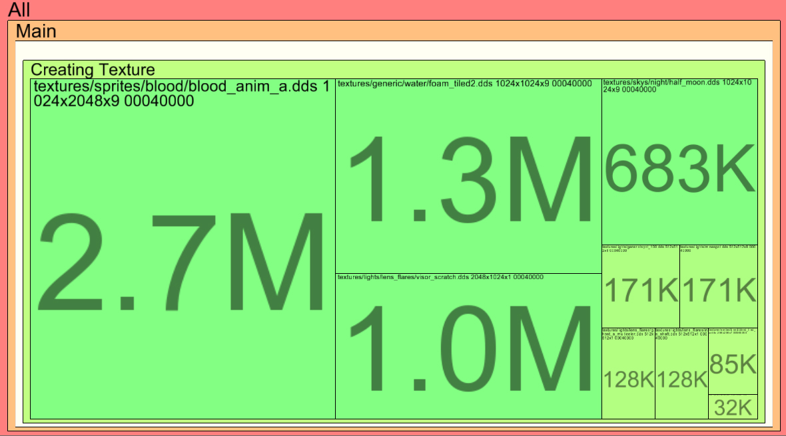
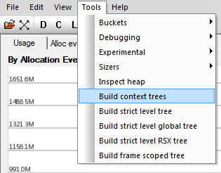

Обзор
В этой статье объясняется, как начать исследование файла журнала MemReplay. Пожалуйста, обратитесь к Начало работы с MemReplay и Настройка и загрузка данных с помощью инструмента MemReplay если вы еще не успешно загрузили файл .zmrl.
Главы:
Экран использования
Если вы загрузили файл .zmrl в инструмент MemReplay, вы увидите что-то похожее на следующий снимок экрана.

Загруженный здесь пример файла журнала показывает все распределения для жизненного цикла:
запуск исполняемого файла -> главное меню -> загрузка уровня леса -> достижение точки появления -> возможно взаимодействие с игроком
По событию распределения окно и По кадру Оба окна представляют одно и то же распределение памяти. Однако они различаются по способу их отображения:
- По событию распределения: Каждый образец графа представляет ровно одно распределение (не связанное со временем).
- По кадру: Каждый образец графа представляет ровно один кадр (не связанный с количеством выделений или временем).
Есть три линии разного цвета (Запрошено, Потреблено и файл подкачки) которые имеют разные значения использования памяти:
- Запрошено: объем памяти, запрашиваемый движком. Эта линия может быть скрыта за Потреблено памяти, поскольку они обычно совпадают.
- Потреблено: Фактически используемый объем памяти. Это тот параметр, который вас, скорее всего, заинтересует.
- Файл подкачки: Занятая память процесса. На PC может случиться так, что некоторые выделения выполняются на другом RAM, например. текстуры на VRAM.
NOTE: Файл подкачки использование памяти дает только информацию о фактическом использовании процесса.
Цвет трех линий (Запрошено, Потреблено и файл подкачки) можно настроить, выбрав нужную вкладку.
- Равномерное масштабирование: Прокрутите колесо мыши.
- Свободное масштабирование: Удерживайте среднюю кнопку мыши и перетащите мышь.
- Панорамирование: Удерживайте правую кнопку мыши и перетащите мышь.
Новые маркеры добавляются внутри кода с помощью макроса MEMSTAT_LABEL, MEMSTAT_LABEL_FMT или MEMSTAT_LABEL_SCOPED
Отслеживание памяти
В следующем примере показано, как исследуется распределение памяти. Выберите область внутри По событию распределения или По кадру окно.

В верхней панели нажмите кнопку Д кнопка, которая дает вам просмотреть детали выбора.

Затем нажмите Иди!
Диапазон Alloc Ev представляет фактический выбор и может быть скорректирован при необходимости.

Откроется новая вкладка, похожая на вкладку на следующем снимке экрана. При нажатии на зеленый блок памяти обновляется стек вызовов слева.

В этом примере блок памяти и стек вызовов показывают, что 6,4 МБ были выделены Создать2DТекстура() в указанном диапазоне.
Выбор Код Вкладка внизу показывает фактическое положение внутри кода.

Нажатие кнопки Д Повторная кнопка после выбора функции из стека вызовов вызовет переход к строке кода в Visual Studio. Обратите внимание, что решение должно быть уже открыто в Visual Studio.
Получить дополнительную информацию о блоке памяти несложно. Выберите блок памяти, который хотите изучить, и нажмите кнопку С кнопку на верхней панели, чтобы отобразить контекстное дерево.

Это дает сводку элементов, которые вместе образуют выбранный вами блок памяти.
В этом примере блок памяти размером 6,4 МБ состоит из таких текстур, как blood_anim_a.dds, foam_tiled2.dds и другие.

Информацию о дереве контекста можно добавить программно с помощью макросов. MEMSTAT_CONTEXT и MEMSTAT_CONTEXT_FMT
Категоризированное контекстное дерево может быть создано из Инструменты -> Построение контекстных деревьев. Если ни одна область не выбрана, она будет создана для всего жизненного цикла журнала захвата.
